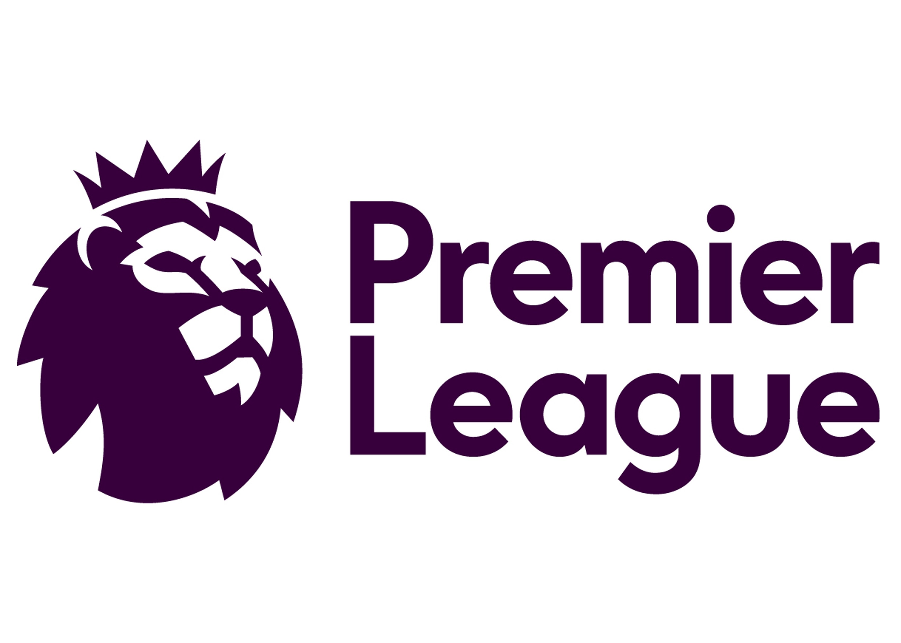
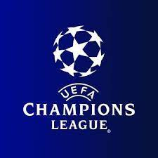
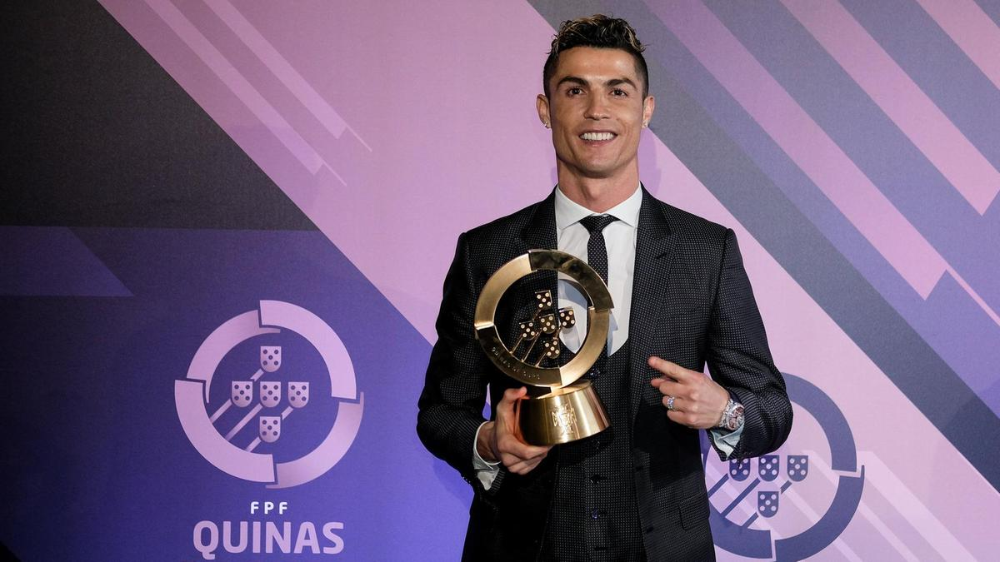
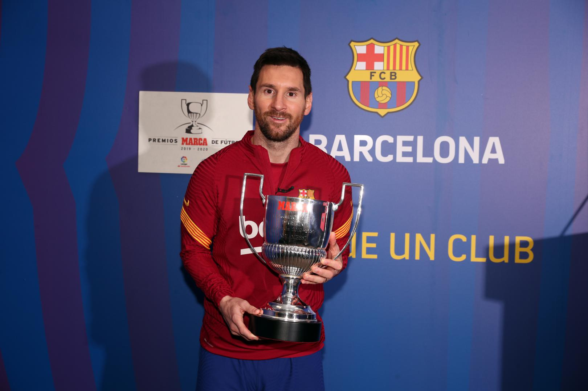

FOOTBALL
Football or Soccer, is a team sport played with a spherical ball between two teams of 11 players. It is played by approximately 250 million players in over 200 countries and dependencies, making it the world's most popular sport. There are many countries that play football such as Portugal, Barcelona, Spain, Italy, etc.
Football Leagues:
There are many leagues that place every year. 2 of them are Premier League and Champions Leagues.
PREMIER LEAGUE
The Premier League, often referred to exonymously as the English Premier League or the EPL, is the top level of the English football league system. Contested by 20 clubs, it operates on a system of promotion and relegation with the English Football League.

CHAMPIONS LEAGUE
The UEFA Champions League is an annual club football competition organised by the Union of European Football Associations and contested by top-division European clubs, deciding the competition winners through a round robin group stage to qualify for a double-legged knockout format, and a single leg final.

Some Famous Football Players:
CRISTIANO RONALDO
Cristiano Ronaldo dos Santos Aveiro GOIH ComM is a Portuguese professional footballer who plays as a forward for Serie A club Juventus and captains the Portugal national team. He also is the captain of Juventues.

LIONEL MESSI
Lionel Andrés Messi is an Argentine professional footballer who plays as a forward and captains the Argentina national team. He is currently a free agent, having played all his professional career for La Liga club Barcelona, whom he captained since season 2015-2016.
